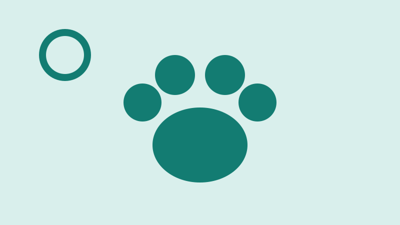
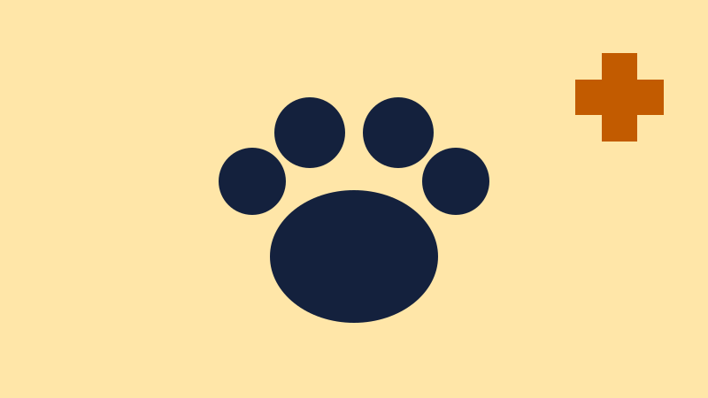

Em andamentoPlantão 24h
Resgate Solidário
Equipe que atende denúncias de animais feridos ou abandonados e leva cada um para avaliação veterinária.
Arrecadado: R$ 18.400 de R$ 30.000
Cada projeto tem uma meta de arrecadação aberta para acompanhamento.

Em andamentoPlantão 24h
Equipe que atende denúncias de animais feridos ou abandonados e leva cada um para avaliação veterinária.
Arrecadado: R$ 18.400 de R$ 30.000

Em andamentoAtendimento gratuito
Clínica sobre rodas que castra gratuitamente animais de famílias de baixa renda nos bairros da região.
Arrecadado: R$ 9.600 de R$ 20.000

Meta quase batidaVagas limitadas
Famílias acolhem um animal em casa até que ele seja adotado, com ração e consultas pagas pelo instituto.
Arrecadado: R$ 11.500 de R$ 15.000
Faltam só R$ 3.500 para a meta.
Você pode ajudar no abrigo, no transporte de animais, nas feiras de adoção ou oferecendo um lar temporário.
Doações em dinheiro, ração ou medicamentos mantêm o abrigo funcionando. Para doar em dinheiro, faça um Pix para a chave doe@pataslivres.example (dado fictício).
| Valor | Ajuda a pagar |
|---|---|
| R$ 30 | Uma semana de ração para um animal |
| R$ 80 | Vacinas de um filhote |
| R$ 150 | Uma castração na clínica móvel |
Ver chave Pix Cadastrar como doador